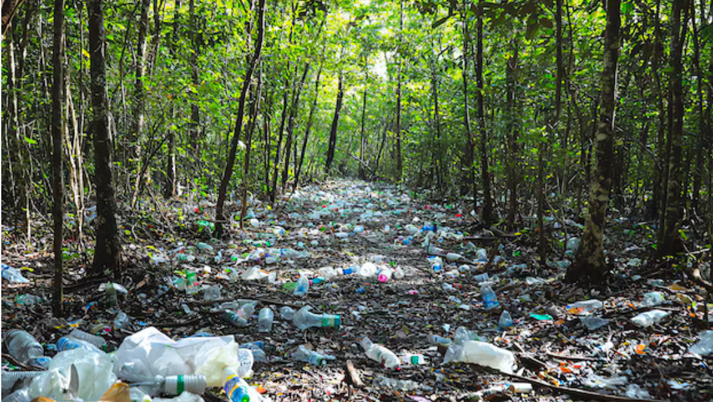
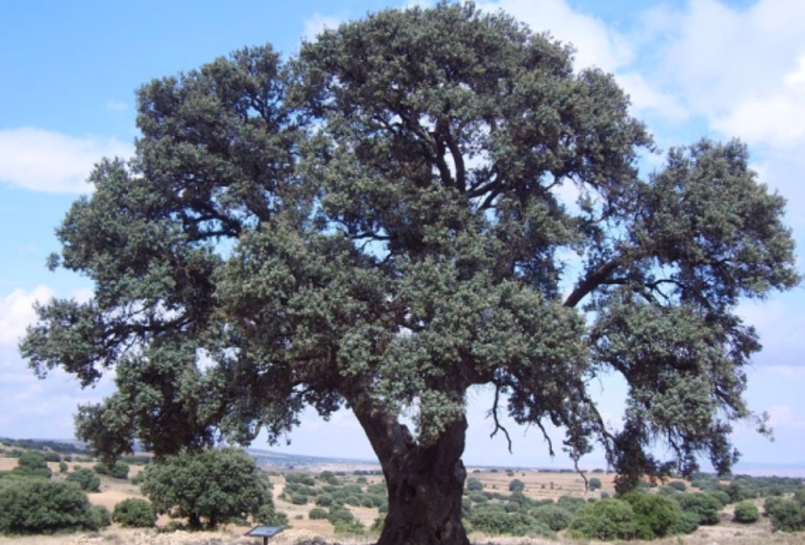
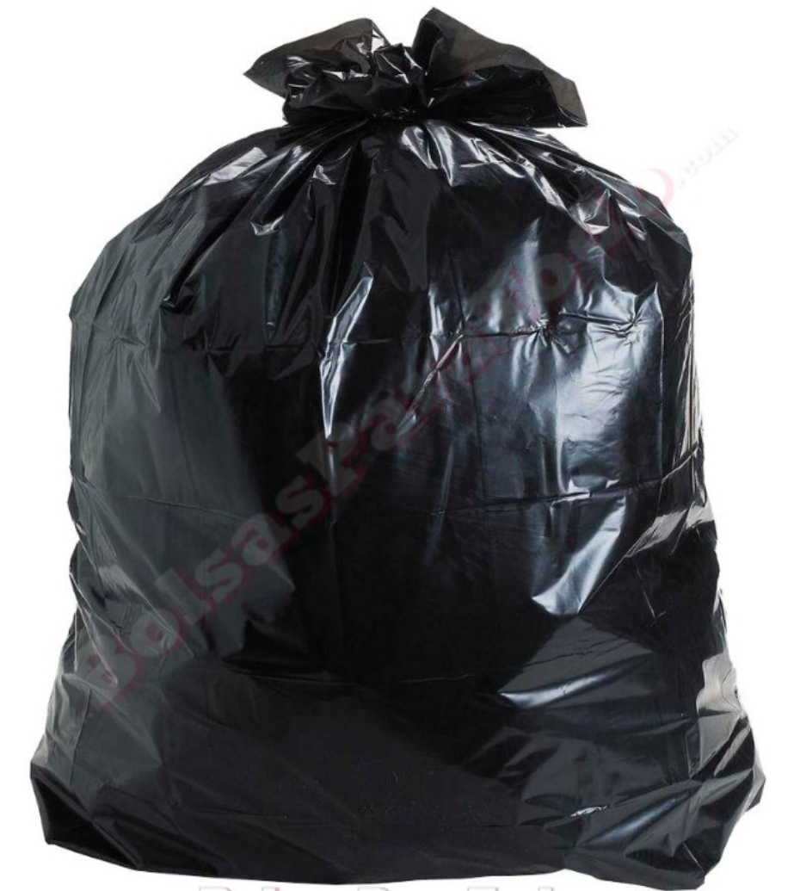

Los bosques, senderos, parques y lugares naturales también están contaminados. Hay plásticos por doquier y eso le hace muy mal a la naturaleza.
Por ejemplo, si te comes un chocolate y lo tiras al suelo, eso puede hacer que un árbol quede contaminado y que no podamos respirar bien.
Porque recordemos que respiramos gracias a los árboles, por eso no hay que tirar basura en cualquier lado.
  